A widget overview
A widget overview
A widget overview
A widget overview
| 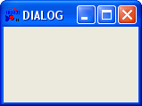 | DIALOG A dialog-window is a widget that acts as a parent-widget for any other widgets, the so called child-widgets. This dialog-window can obtain different, pre-defined window-styles and has a title-bar on its top, displaying a freely definable text. Additionally, these widgets are able to provide a menu-bar and a statusbar. It is possible to show and manage multiple dialog widgets at the same time. |
| 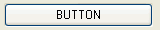 | BUTTON A button is an area on a dialog-widget that can be visually "pressed" to initiate an operation that is described by the labelling text the button displays. The caption of a button can be set using the CAPTION-attribute. |
| 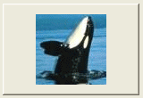 | IMAGEBUTTON An IMAGEBUTTON-widget has the same purpose as a BUTTON-widget with the difference, that this widget is able to display an externally saved image instead of a labelling text. The image is specified by setting the IMAGE- or IMAGE_TRANSPARENT-attributes to a valid, external bitmap-filename (with .BMP file extension). |
| 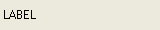 | LABEL LABEL-widgets (Labels) are static fields that are displaying text. Labels are mostly used to describe the purpose of input- or edit-fields by positioning it in front of the widget that should be described. The displayed text is set using the CAPTION-attribute. |
| 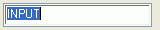 | INPUT An INPUT-widget provides a single-line text edit field. For example, these widgets are used to let the user enter smaller values, like names, addresses, phone numbers and much more. The text can be read and changed using the TEXT-attribute, same as the cursor's position within the text-field, which can be read or set using the SELPOS-attribute. Using the SELECTION-attribute, the selected text in the edit-field can be determined and replaced. |
| 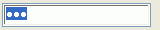 | PWD A PWD-widget provides a single-line password prompting field. These widget-type is used to read or display masked values, as it is the case in RapidBATCH's pre-defined PWDBOX-dialog. The user can not see the widget's content, which is masked by "*"-characters. This widget supports the same attributes like INPUT-widgets. |
| 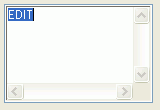 | EDIT, EDIT_LINEWRAP An EDIT-typed widget provides a multi-line text input field. These widgets can be seen as small text-editors to edit and display greater amounts of texts on a dialog. EDIT- and EDIT_LINEWRAP-typed widgets are both supporting the same input-field-specific attributes like TEXT, SELPOS and SELECTION. When creating an EDIT_LINEWRAP-typed widget, the function and usage of the widget is the same, but text is not scolled horizontally. The widget automatically breaks its content text when its longer than the widget's width. This feature is very helpful and ergonomic, especially when the user should edit higher amounts of text that do not expect manual line breaks. |
| 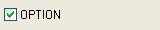 | OPTION An OPTION-typed widget provides a so called "check box". A check box is a small, labbeled box that can be switched active or inactive, using a checkmark, by single-clicking the widget. OPTION-widgets are used to let the user switch options on or off, e.g. for an operation that is performed when the dialog is confirmed. The state of the checkmark can be set and determined using the CHECKED-attribute (0 = checked, -1 = not checked). The labelling text can be accessed using the CAPTION-attribute. |
| 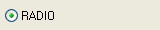 | RADIO A RADIO-widget provides a so called radio-button. A radio-button is a small, round area that looks like a round version of the OPTION-widget. In principle, radio-buttons nearly have the same purpose like OPTION-widgets, with the difference, that a set of radio-buttons is put together to a group of buttons, where only one button can be checked. If another button is clicked, the previously checked one will be get unchecked again. If a radio-button is checked or not can be recongized with the small dot in the middle of the round area. Radio-buttons are named according to the usage of old portable radios, where only one of the buttons could be pressed, and the previous button automatically became released. To define such a group, create all RADIO-typed widgets that should belong to a group directly in a row, using NEWDIALOG. To begin another group of RADIO-widgets, any other widget needs to be created first, e.g. a GROUP-typed widget that visually groups the RADIO-typed widgets together to one unit. The state of the checkmark can be, same way like at OPTION-typed widgets, set and determined using the CHECKED-attribute (0 = checked, -1 = not checked). The labelling text can be accessed using the CAPTION-attribute. |
| 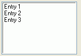 | LIST, LIST_SORTED, LIST_MULTI, LIST_MULTISORTED LIST-widgets, and their derivative widgets LIST_SORTED, LIST_MULTI and LIST_MULTISORTED, are providing a form of widget displaying a list of entries (a so called listbox), like the build-in dialog LISTBOX uses to display a list of entries. LIST-typed widgets are displaying their entries in the same order they are specified, a LIST_SORTED-typed widget automatically sorts its entries alphabetically. Entries are specified and determined using the ITEMS-attribute by specifying a list of entries, where each item is sperated by the RapidBATCH standard list separation character, by default pipe (|). Which entry is selected in the widget can be determined and also specified using the SELECTION-attribute (to get the selected item's value itself) or the SELINDEX-attribute, that contains the selected item's index(es) in the widget. LIST_MULTI- and LIST_MULTISORT-typed widgets are the multi-selectable versions of LIST- and LIST_SORTED-typed widgets. A LIST_MULTI- or LIST_MULTISORTED-typed widget allows the multiple selection of entries, so that one, four or even all entries displayed in the widget can be selected. In case of a LIST_MULTI- or LIST_MULTISORTED-typed widget, the attributes SELINDEX and SELECTION are both returning and accepting lists of item-values that are selected or should be selected. |
| 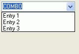 | COMBO COMBO-typed widgets are a mix of INPUT- and LIST-typed widget. COMBO-widgets are displaying an input field whose content can be changed or edited, and a listbox that appears if the user clicks a tiny button at the left of the input field. From this drop-down box, the user can select a pre-defined text from a list, that is taken over to the edit field when selected. The list is specified and determined over the ITEMS-attribute that is also used in LIST-typed widgets and their derivatives. Aditionally, input-field specific attributes like TEXT, SELPOS or SELECTION can be used with COMBO-typed widget. |
| 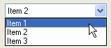 | STATIC_COMBO STATIC_COMBO-Widgets are looking like COMBO-widgets, but with the only difference that STATIC_COMBOs do only offer a static amount of values - it is not possible for the user to enter text into a provided input field. |
| 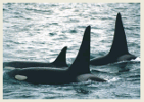 | IMAGE An IMAGE-widget displays an externally saved bitmap-image on the dialog window. The image's filename that should be shown is specified over the IMAGE- or IMAGE_TRANSPARENT-attribute, whereas the IMAGE_TRANSPARENT-attribute makes all pixels that have the same color like the pixel in the upper-right corner of the displayed image transparent, that means each of these pixel will be replace by the dialog's background color. |
 | PROGRESS PROGRESS-Widgets (progress bar) are used to show the percentage progress of a operation. The status bar can visually be set to an amount between 0 and 100 percent. |
| 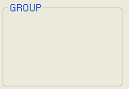 | GROUP This is the only widget-type that doesn't support any event, and has a pure visual function. The GROUP-widget draws a frame that is used as the border to group functional crowds of widgets visually to one separate unit. The caption of a GROUP-widget is set using the CAPTION-attribute. |